Rodrigo López Rojas
Práctica 3: Funcionamiento de Haskell
Introducción
En esta práctica se van a seguir los pasos de un blog para aprender a crear una aplicación de tareas pendientes con Haskell y Stack.
- Proceso al crear la aplicacion
1. Iniciar el entorno de desarrollo de Haskell con Stack
Utilizar el comando $ stack new todo
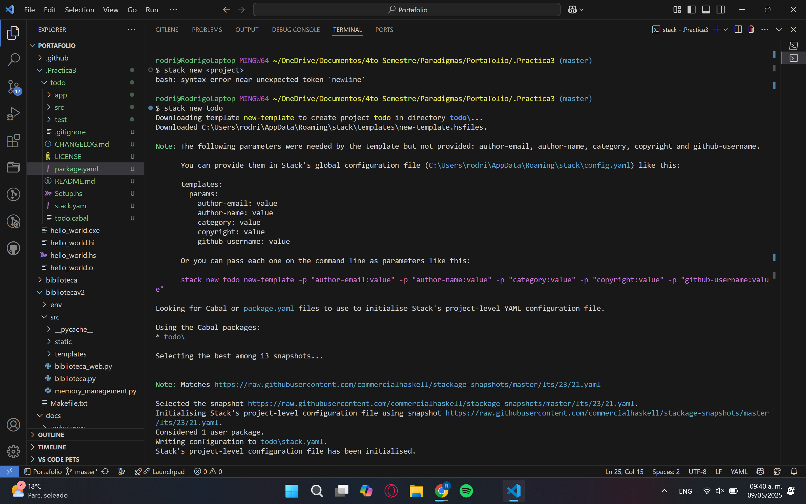
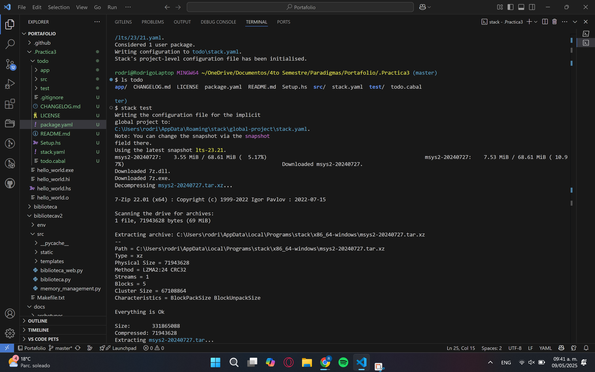
Verificar la creación de los archivos con $ ls todo
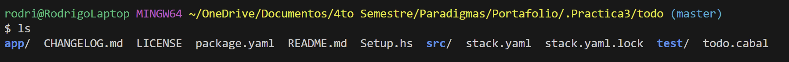
Modificar el archivo package.yaml
Agregar esto a dependencies: -dotenv -open-browser
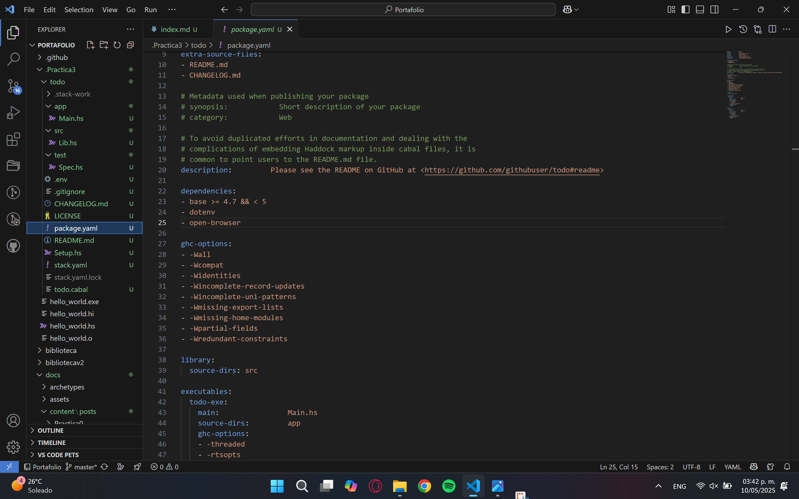
Primer uso de $ stack test
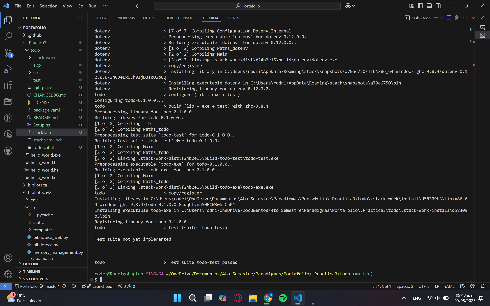
Primer uso de $ stack run
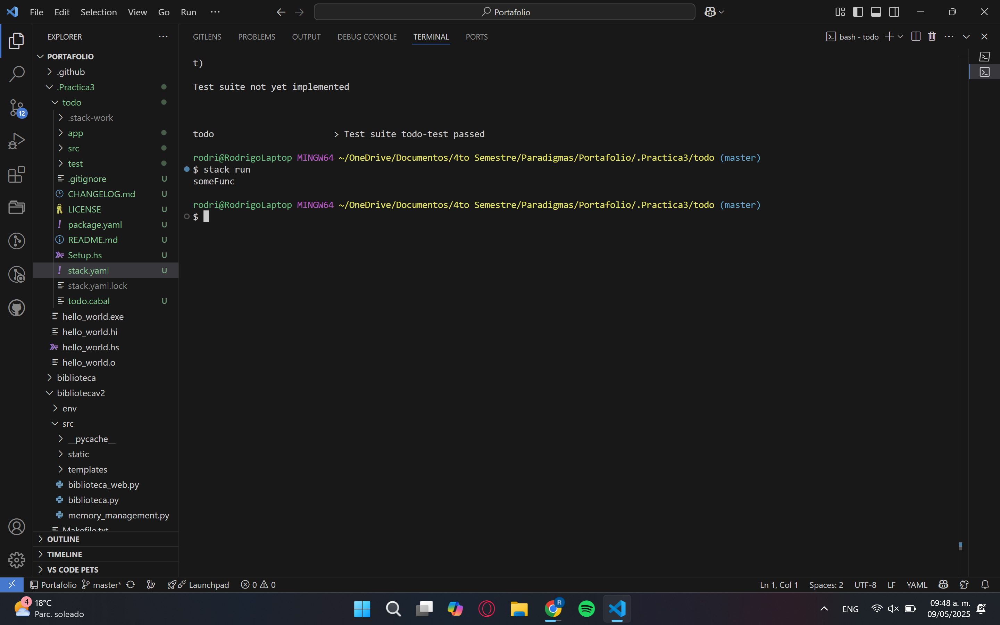
Se puede observar que el proyecto se construyo y compilo en la consola
2. Escribir la aplicación Todo con Haskell
Editar el archivo Main.hs
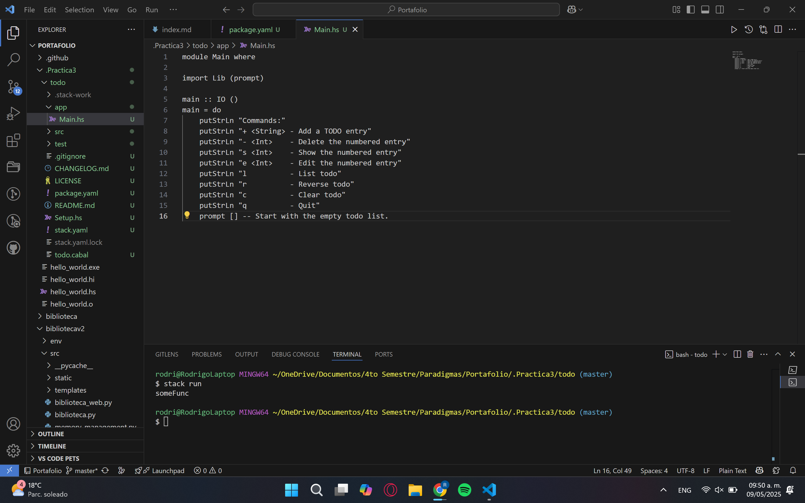
Los putStrLn sirve para mostrar que comandos se pueden usar en la aplicacion de tareas pendientes.
La parte logica principal se manejara con prompt una parte y se importara desde el archivo Lib.sh
Editar el archivo Lib.hs
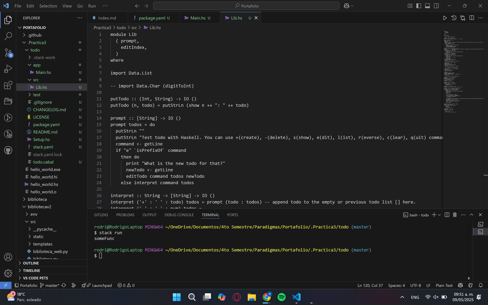
Ejecutar nuevamente $ stack run
Prueba para observar la aplicacion de tareas pendientes de Haskel.
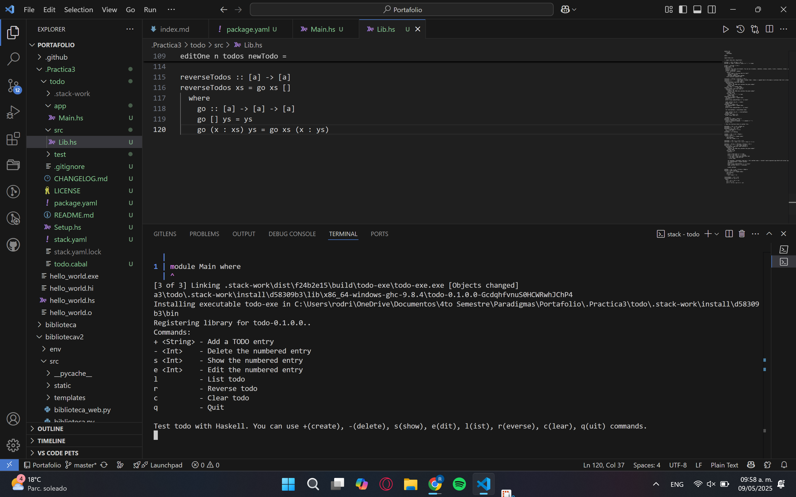
Incluir una tarea pendiente
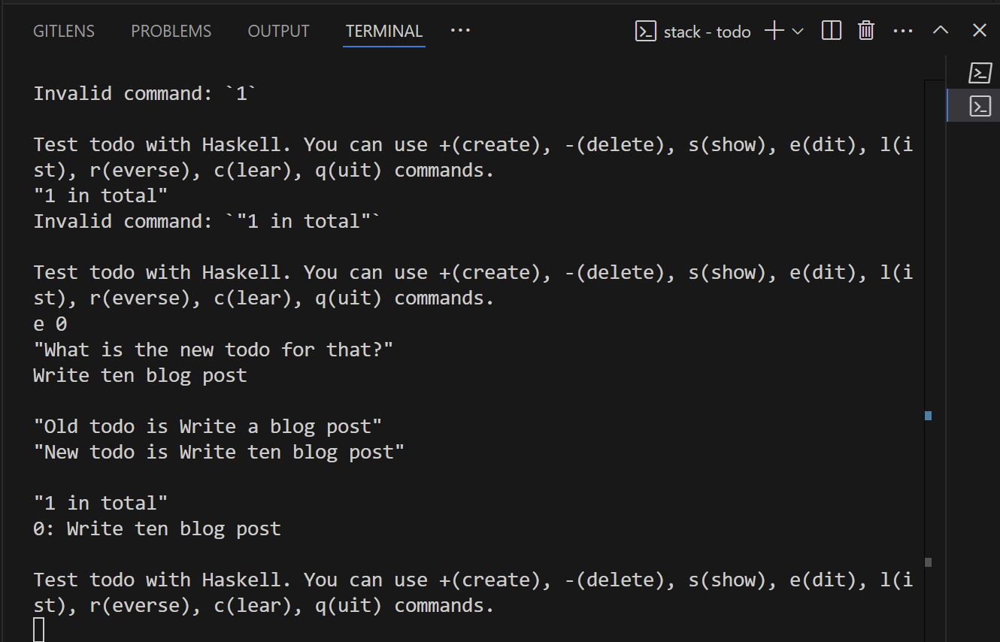
Editar el archivo Spec.hs
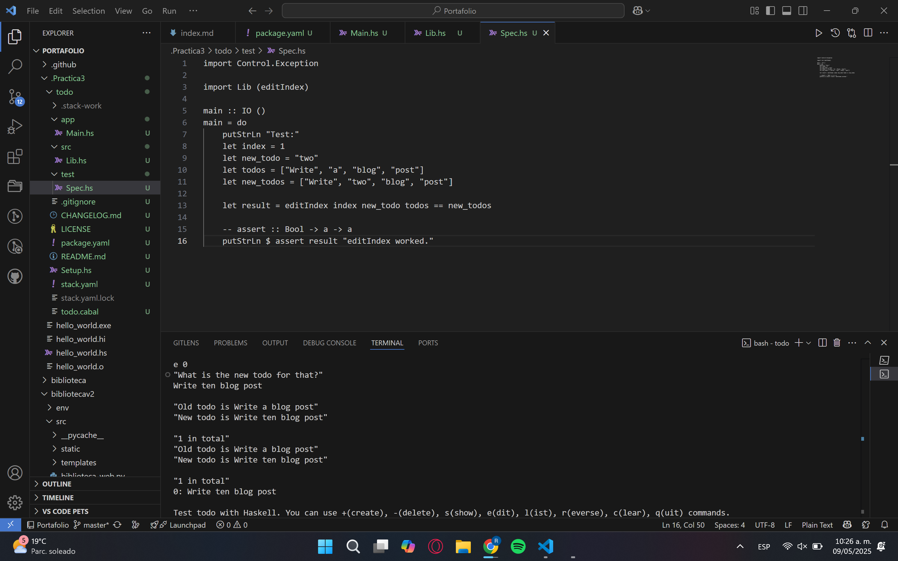
Ejecutar el comando $ stack test nuevamente
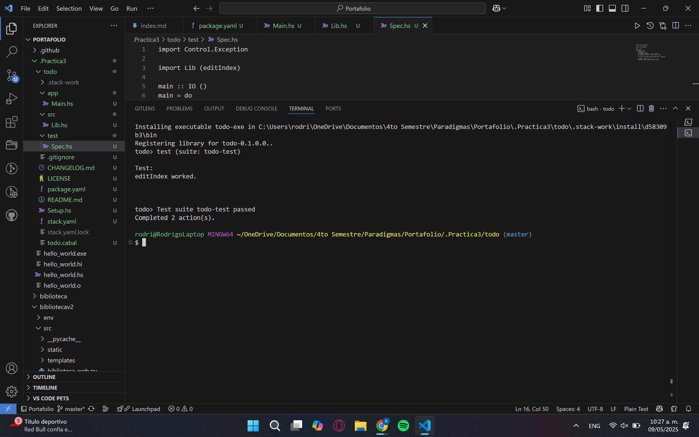
3. Aprender a usar los paquetes de Haskell
Crear un archivo .env
Actualizar el archivo Main.hs
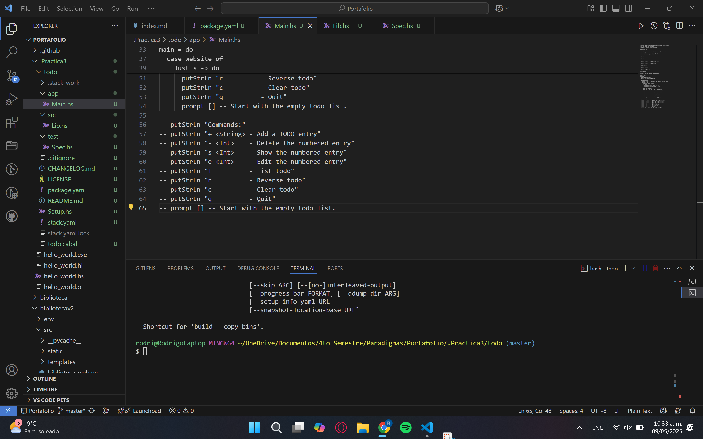
Ejecutar nuevamente

- Funcionamiento de la aplicacion de Haskell
Codigos en configuracion del enterono
package.yaml
dependencies:
- base >= 4.7 && < 5 # Paquete base del sistema
- dotenv # Para cargar variables de entorno desde .env
- open-browser # Para abrir el navegador desde el cdigo
Codigo en la aplicacion Todo
Main.hs
-- Punto de entrada del programa principal
module Main where
-- Importar la funcion 'prompt' desde el módulo Lib
import Lib (prompt)
-- Funcion principal del programa
main :: IO ()
main = do
-- Mostrar al usuario los comandos disponibles
putStrLn "Commands:"
putStrLn "+ <String> - Add a TODO entry" -- Agregar una entrada nueva al TODO
putStrLn "- <Int> - Delete the numbered entry" -- Eliminar una entrada por numero
putStrLn "s <Int> - Show the numbered entry" -- Mostrar una entrada especifica
putStrLn "e <Int> - Edit the numbered entry" -- Editar una entrada especifica
putStrLn "l - List todo" -- Listar todas las entradas TODO
putStrLn "r - Reverse todo" -- Revertir el orden de la lista
putStrLn "c - Clear todo" -- Borrar toda la lista
putStrLn "q - Quit" -- Salir del programa
prompt [] -- Llamar a 'prompt' con una lista vacia para iniciar el ciclo de comandos
Lib.hs
-- Modulo Lib define funciones auxiliares para manejar la lista de TODOs.
module Lib
( prompt, -- Funcion principal para interactuar con el usuario
editIndex -- Permite editar un elemento de la lista en un indice dado
)
where
import Data.List -- Importar utilidades de listas, como 'isPrefixOf'
-- import Data.Char (digitToInt)
-- Muestra una entrada TODO con su numero de indice
putTodo :: (Int, String) -> IO ()
putTodo (n, todo) = putStrLn (show n ++ ": " ++ todo)
-- Funcion principal que interpreta los comandos del usuario
prompt :: [String] -> IO ()
prompt todos = do
putStrLn ""
putStrLn "Test todo with Haskell. You can use +(create), -(delete), s(show), e(dit), l(ist), r(everse), c(lear), q(uit) commands."
command <- getLine
if "e" `isPrefixOf` command -- Si el comando comienza con 'e', editar
then do
print "What is the new todo for that?"
newTodo <- getLine
editTodo command todos newTodo
else interpret command todos -- Para otros comandos, usar interpret
-- Interpreta los distintos comandos del usuario
interpret :: String -> [String] -> IO ()
interpret ('+' : ' ' : todo) todos = prompt (todo : todos) -- Agregar un nuevo TODO al principio
interpret ('-' : ' ' : num) todos =
case deleteOne (read num) todos of -- Eliminar el TODO en la posicion dada
Nothing -> do
putStrLn "No TODO entry matches the given number"
prompt todos
Just todos' -> prompt todos'
interpret ('s' : ' ' : num) todos = -- Mostrar una entrada especifica
case showOne (read num) todos of
Nothing -> do
putStrLn "No TODO entry matches the given number"
prompt todos
Just todo -> do
print $ num ++ ". " ++ todo
prompt todos
interpret "l" todos = do -- Listar todos los TODOs
let numberOfTodos = length todos
putStrLn ""
print $ show numberOfTodos ++ " in total"
mapM_ putTodo (zip [0 ..] todos)
prompt todos
interpret "r" todos = do -- Revertir el orden de la lista
let numberOfTodos = length todos
putStrLn ""
print $ show numberOfTodos ++ " in total"
let reversedTodos = reverseTodos todos
mapM_ putTodo (zip [0 ..] reversedTodos)
prompt todos
interpret "c" todos = do -- Limpiar la lista TODO
print "Clear todo list."
prompt []
interpret "q" todos = return () -- Salir del programa
interpret command todos = do -- Comando invalido
putStrLn ("Invalid command: `" ++ command ++ "`")
prompt todos
-- Elimina una entrada TODO en una posicion especifica
deleteOne :: Int -> [a] -> Maybe [a]
deleteOne 0 (_ : as) = Just as
deleteOne n (a : as) = do
as' <- deleteOne (n - 1) as
return (a : as')
deleteOne _ [] = Nothing
-- Muestra una entrada TODO si existe
showOne :: Int -> [a] -> Maybe a
showOne n todos =
if (n < 0) || (n > length todos)
then Nothing
else Just (todos !! n)
-- Reemplaza el elemento en el indice dado con uno nuevo
editIndex :: Int -> a -> [a] -> [a]
editIndex i x xs = take i xs ++ [x] ++ drop (i + 1) xs
-- Logica para editar una entrada TODO
editTodo :: String -> [String] -> String -> IO ()
editTodo ('e' : ' ' : num) todos newTodo =
case editOne (read num) todos newTodo of
Nothing -> do
putStrLn "No TODO entry matches the given number"
prompt todos
Just todo -> do
putStrLn ""
print $ "Old todo is " ++ todo
print $ "New todo is " ++ newTodo
let newTodos = editIndex (read num :: Int) newTodo todos
let numberOfTodos = length newTodos
putStrLn ""
print $ show numberOfTodos ++ " in total"
mapM_ putTodo (zip [0 ..] newTodos)
prompt newTodos
-- Devuelve la entrada antigua antes de editar, si existe
editOne :: Int -> [a] -> String -> Maybe a
editOne n todos newTodo =
if (n < 0) || (n > length todos)
then Nothing
else Just (todos !! n)
-- Invierte el orden de una lista
reverseTodos :: [a] -> [a]
reverseTodos xs = go xs []
where
go :: [a] -> [a] -> [a]
go [] ys = ys
go (x : xs) ys = go xs (x : ys)
Spec.hs
-- Importa el modulo para manejar aserciones y excepciones
import Control.Exception
-- Importa la función editIndex desde el módulo Lib
import Lib (editIndex)
-- Funcion principal
main :: IO ()
main = do
putStrLn "Test:" -- Mensaje inicial para el usuario
-- Datos de prueba
let index = 1 -- Indice que queremos editar
let new_todo = "two" -- Nuevo valor que queremos poner en la lista
let todos = ["Write", "a", "blog", "post"] -- Lista original
let new_todos = ["Write", "two", "blog", "post"] -- Lista esperada después de la edición
-- Comparamos el resultado de aplicar 'editIndex' con la lista esperada
let result = editIndex index new_todo todos == new_todos
-- assert :: Bool -> a -> a
-- Si 'result' es False, lanza una excepcion. Si es True, imprime el mensaje
putStrLn $ assert result "editIndex worked."
Codigo en aprender a usar los paquetes en haskell
Main.hs
-- Enlace al tutorial oficial sobre Stack Script
-- https://www.fpcomplete.com/haskell/tutorial/stack-script/
-- Estas líneas son necesarias para que el archivo funcione como script ejecutable en Unix
-- #!/usr/local/bin/env stack
-- stack --resolver lts-12.21 script
-- Modulo principal del programa
module Main where
-- Importar dotenv para cargar variables desde un archivo .env
import Configuration.Dotenv (defaultConfig, loadFile)
-- Importar la funcion prompt desde nuestro módulo Lib
import Lib (prompt)
-- Importar lookupEnv para obtener variables de entorno
import System.Environment (lookupEnv)
-- Importar openBrowser para abrir URLs en el navegador predeterminado
import Web.Browser (openBrowser)
-- $stack run
-- $stack build
-- $stack install
-- $stack install --local-bin-path <dir>
-- $stack install --local-bin-path .
-- $./text-exe
-- $stack Main.hs
-- $chmod +x Main.hs
-- $./Main.hs
-- Comentario aclaratorio: este script requiere .env y puede abrir un navegador.
-- Función principal
main :: IO ()
main = do
-- Carga las variables de entorno desde el archivo .env
loadFile defaultConfig
-- Busca la variable WEBSITE en el entorno
website <- lookupEnv "WEBSITE"
-- Verifica si la variable WEBSITE esta definida
case website of
Nothing -> error "You should set WEBSITE at .env file." -- Error si no esta definida
Just s -> do
-- Intenta abrir la URL en el navegador predeterminado
result <- openBrowser s
if result
then print ("Could open " ++ s) -- Confirmación de exito
else print ("Couldn't open " ++ s) -- Mensaje de error si falla
-- Muestra los comandos disponibles al usuario
putStrLn "Commands:"
putStrLn "+ <String> - Add a TODO entry"
putStrLn "- <Int> - Delete the numbered entry"
putStrLn "s <Int> - Show the numbered entry"
putStrLn "e <Int> - Edit the numbered entry"
putStrLn "l - List todo"
putStrLn "r - Reverse todo"
putStrLn "c - Clear todo"
putStrLn "q - Quit"
prompt [] -- Inicia el bucle de interaccion con una lista vacia
-- putStrLn "Commands:"
-- putStrLn "+ <String> - Add a TODO entry"
-- putStrLn "- <Int> - Delete the numbered entry"
-- putStrLn "s <Int> - Show the numbered entry"
-- putStrLn "e <Int> - Edit the numbered entry"
-- putStrLn "l - List todo"
-- putStrLn "r - Reverse todo"
-- putStrLn "c - Clear todo"
-- putStrLn "q - Quit"
-- prompt [] -- Start with the empty todo list.